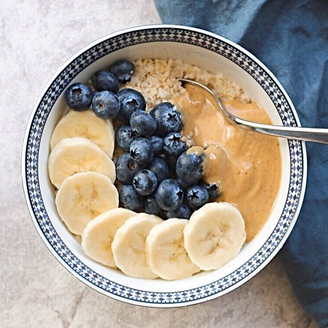

Brandon's Breakfast Bonanza!
Home
About Me!
One Minute Oats

Perhaps the most convenient breakfast of the bunch, 1 minute oats!
Ingredients
Oats
Milk
Peanut butter
1 Banana
Blue Berries
Cinnamon
Preparation
Pour oats into bowl with milk.
Heat up oats and milk in microwave for 1 minute.
Scoop 1 tbsp of peanut butter into bowl.
Add desired ratio of blue berries and chopped bananas into oats.
Season with cinnamon while mixing oats and berries.
Voila, enjoy!